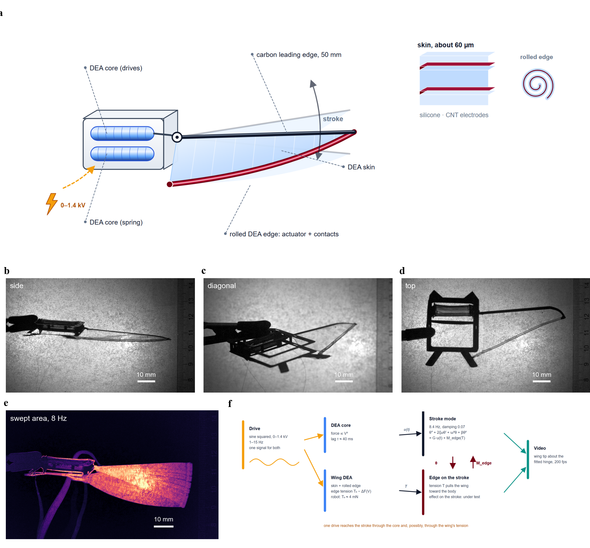
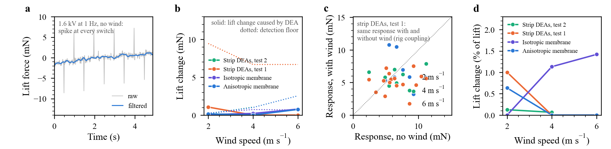
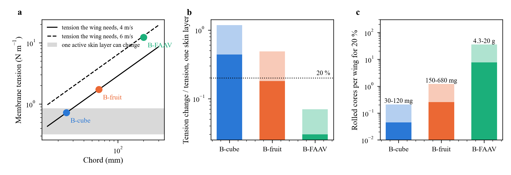

Bats tune the tension of their wing membrane with muscles in the skin and at the skeleton. Here the muscles are dielectric elastomer actuators (DEAs). One question runs through the work: where must a DEA sit to change a wing's tension, and is it fast enough to act within a stroke? The answer depends on scale, so the work is grouped by wing size.

Built and flapping. Whole skin active; the rolled edge is a tension switch. Next: two wings, and discrete and attachment wings on the same robot.

Discrete DEAs in the skin. Four gliding campaigns: no effect above noise, explained by a missing load path. Flapping effect not established.

Nothing built. Calculations: only actuators at the wing's attachments can change its tension at this size.
a The tension a membrane wing needs grows with chord and speed, $T_0 = C_T\,q\,c$. One active skin layer changes a fixed tension per width, set by the film alone (grey) (Eq. 1, Eq. 2).
b So the skin's authority, $\Delta T_{skin}/T_0 \propto 1/(q\,c)$, falls with size (Eq. 2): above 20 % at B-cube, borderline at B-fruit, 3–7 % at B-FAAV, which would need 3–8 layers.
c Rolled cores at the attachment work at every size: a fraction of one core at B-cube, 8–36 cores (4–20 g) per wing at B-FAAV (Eq. 3).
Assumed: 30 µm layers, 1.6 kV, $\varepsilon_r$ 2.8, $C_T$ 3. Equations on the B-FAAV page.
| Whole skin active | Discrete DEAs in the skin | DEAs at the attachment | |
|---|---|---|---|
| B-cube (cm) | built, tested | to build | to build |
| B-fruit (10 cm) | fabrication limit (70 mm electrodes) | built, tested | possible |
| B-FAAV (100 cm) | too little authority (fig. b) | no load path (statics) | only option |
At B-fruit the physics still allows an active skin (fig. b); the limit there is fabrication. At B-FAAV the limit is physical.